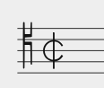
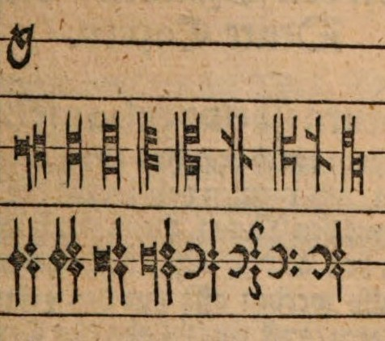
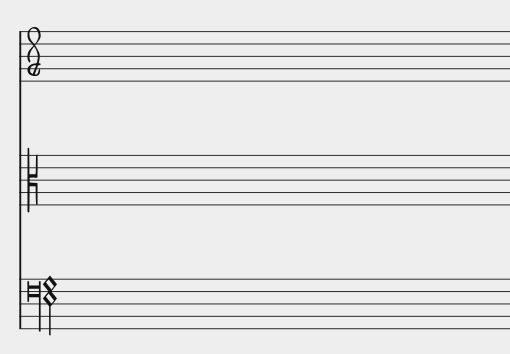

Now that we know how to encode mensural note values with special dur values, let's examine the beginning of our example in greater detail. Here is the beginning of the staff, showing the staff lines, clef, and mensural sign.

In the source code, we need to declare in the staffDef that this MEI file uses mensural notation. Our example is in white mensural notation, so that's what we declare:
<staffDef n="1" notationtype="mensural.white" ...other attributes follow... >
Our example uses a 5-line staff (although less and more lines are quite common in mensural notation as well), so we put lines="5" here.
Furthermore, we define the clef shape and position: clef.shape="C" clef.line="4". Note the shape of the clef which is distinct from the C clef in Common Western Music Notation, 𝄡. Also, the clef position was not yet standardized for mensural notation, so expect to see clefs on different lines than in Common Western Music Notation.
You might have noticed that the C clefs in the source and the one in the rendered MEI look quite different. First, mensural notation uses a variety of clef shapes, as exemplified by Agricola in his Musica figuralis in the following figure. It shows a g clef on the top-most line, a selection of c clefs below that – the middle one looks closest to the one in our rendering –, and a few f clefs yet further down below.

To contrast, this is how the Verovio renderer shows the mensural g, c, and f clefs (from top to bottom) on lines 2, 3, and 4, respectively. As mentioned in the introduction, we are not so much concerned with an exact visual match for the clef symbol, as long as we mark up the source in a semantically correct way. For clefs, this means that their exact position (line number) must be encoded as it appears in the source.
